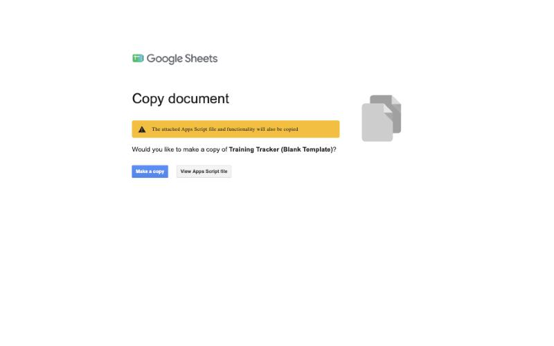
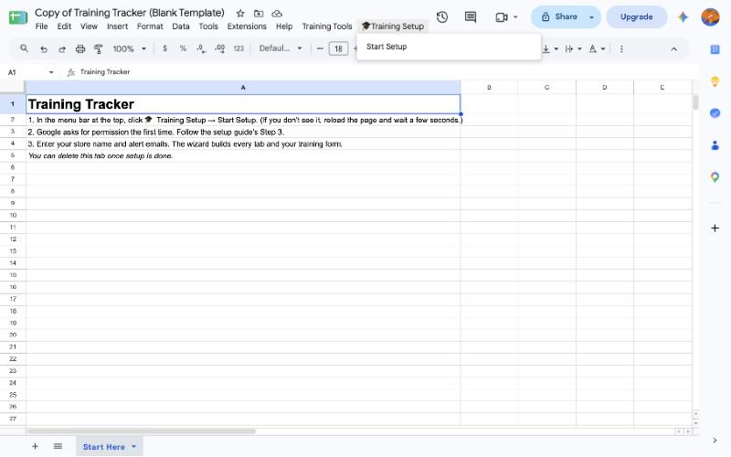
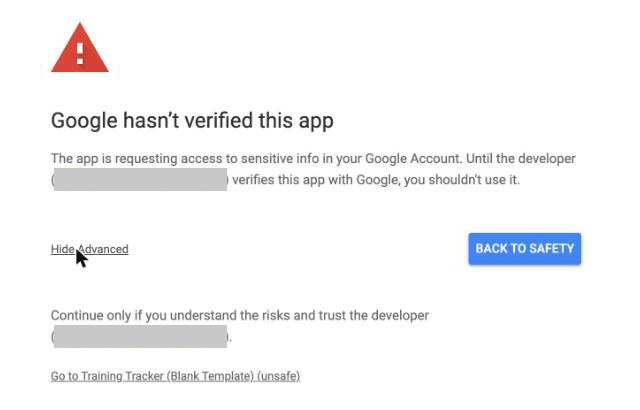
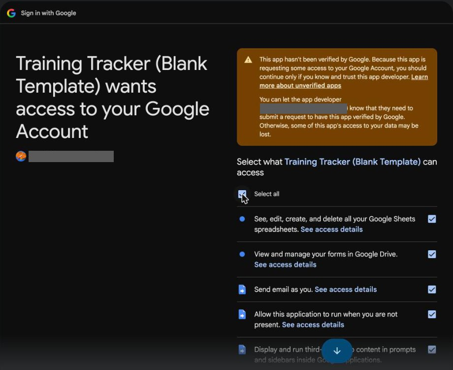
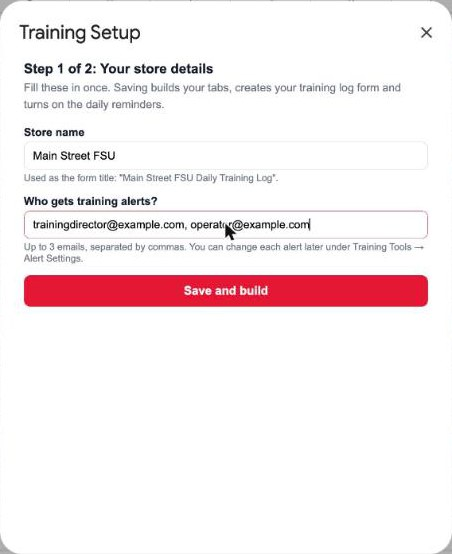
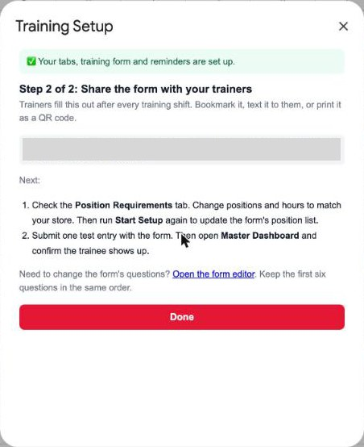
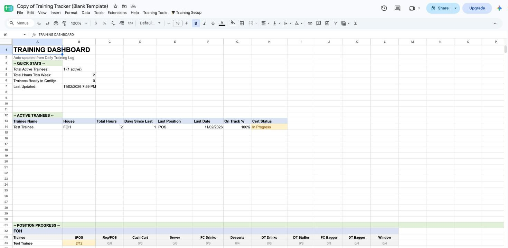

Training Tracker — Setup Guide
This gets your store's training tracker running from scratch. You don't need to know anything about code, and you'll never have to open or paste any. Plan on about 15 minutes, on a computer (not a phone).
Before you start
Have these ready. The setup asks for each one once:
- A Google account for your store, not your personal one. The training form and alert emails belong to whichever account makes the copy, so use the one your team shares.
- Your store name as your team knows it, e.g. "Main Street FSU"
- Up to 3 email addresses that should get training alerts (usually your Training Director and Operator)
- Your training positions and hours (optional). The tracker starts with a typical FOH/BOH list you can edit in Step 6.
Step 1: Make your own copy
- Click this link: Make my copy of the Training Tracker. If Google asks you to sign in first, use your store account.
- Google shows a Copy document screen. The yellow note says the attached script will be copied too. That's the tool itself, and it's supposed to come along.
- Click the blue Make a copy button.

Your copy opens, named "Copy of Training Tracker (Blank Template)". You can rename it any time by clicking the name. It's blank and belongs only to you. Nobody else can see what you put in it.
Step 2: Start the setup
- Wait about 10 seconds for the sheet to finish loading.
- In the menu bar at the top (File, Edit, View…), click 🎓 Training Setup, then Start Setup.

Don't see 🎓 Training Setup? Reload the page and wait a little longer. It's always the last item in the menu bar.
Step 3: Give the tool permission (one time only)
Google asks you to approve the tool before it can build your form and send alert emails. You'll see four screens in a row. This is normal, and you only do it once. The sign-in screens open in a new tab.
Screen 1: "Authorization required." Click OK. If Google asks which account to use, pick your store account.
Screen 2: "Google hasn't verified this app." This looks alarming, but it's expected. The "app" is your own copy, so the developer named on that screen is your own account. Google shows this for any spreadsheet tool that isn't sold in its store. 1. Click Advanced (small gray link, bottom left). 2. Click Go to Training Tracker (Blank Template) (unsafe) at the bottom.

Screen 3: "Sign in to Training Tracker." Check it shows your store account, then click Continue.
Screen 4: the list of permissions. Tick Select all at the top, then click Continue.

The sign-in tab closes and the setup carries on in your sheet by itself. If nothing happens after about 30 seconds, click 🎓 Training Setup → Start Setup again.
Step 4: Answer the setup questions
The sheet builds its tabs first (about 20 seconds). Then a Training Setup box opens:
- Store name. It goes in your form's title, e.g. "Main Street FSU Daily Training Log".
- Who gets training alerts? Up to 3 emails, separated by commas.
- Click Save and build. This takes about 30 seconds. It creates your training form, links it to the sheet, and turns on the daily reminders.

If something's missing, a red message at the top of the box tells you what to fill in.
Step 5: Share the form with your trainers
When setup finishes, the box shows your training form link. Trainers fill it out after every training shift: date, trainee name, position, hours, on track or not, and notes.

- Bookmark the link on the trainer tablet, or text it to your trainers.
- To print a QR code: open the link, click the three dots (⋮) in the browser, then Share → Create QR code.
You can always find the form again: in the sheet, click Tools → Manage form → Go to live form.
Step 6: Match the positions to your store
- Open the Position Requirements tab.
- Edit the list to match how your store trains. Each row is one position: House (FOH or BOH), Position Name, and the Minimum / Maximum / Target Hours a trainee should spend there.
- When you're done, click 🎓 Training Setup → Start Setup again and click Save and build. This updates the position list on your form. Your answers are already filled in.
Step 7 (optional): The extras
Everything else lives in the Training Tools menu: - Alert Settings: turn each alert on or off, or send different alerts to different people. - Generate Training Timeline: a day-by-day plan for one new hire from their start date. - Review Duplicate Names: merge "Tim" and "Timothy" into one trainee. - Manually Certify Trainee: moves someone who's done training to the Certification Log.
How to know it worked
- Open your form link and submit one test entry: trainee Test Trainee, any position, 2 hours.
- Back in the sheet, the Daily Training Log tab has a new row for Test Trainee within a few seconds.
- The Master Dashboard tab lists Test Trainee under Active Trainees.

If all three look right, you're done. To clear the test, delete Test Trainee's row on the Daily Training Log tab and on the Form Responses 1 tab, then click Training Tools → Refresh Dashboard.
If something goes wrong
1. Form entries don't show up on the Daily Training Log. - Click Training Tools → Sync Form Data. This copies any missing form entries over. - Then click 🎓 Training Setup → Start Setup → Save and build once. It puts back anything that's missing, like the link between the form and the sheet, and never erases data.
2. No alert emails arrive. - Open Training Tools → Alert Settings and check the alert is on and the email is right. - Check the spam folder of the person who should get it. - If you skipped Select all in Step 3, Google never gave the tool permission to send email. Click Extensions → Apps Script. Pick dailyReminderCheck in the dropdown next to ▶ Run, then click ▶ Run, tick Select all, and click Continue.
3. A position is missing from the form's dropdown. Add it on the Position Requirements tab, then run 🎓 Training Setup → Start Setup → Save and build again.
4. The same person shows up twice on the dashboard. Someone typed the name differently. Click Training Tools → Review Duplicate Names and merge them.
5. The 🎓 Training Setup or Training Tools menu is missing. Reload the sheet and wait about 10 seconds. Re-running Start Setup is always safe. It shows what you entered before and never erases data.